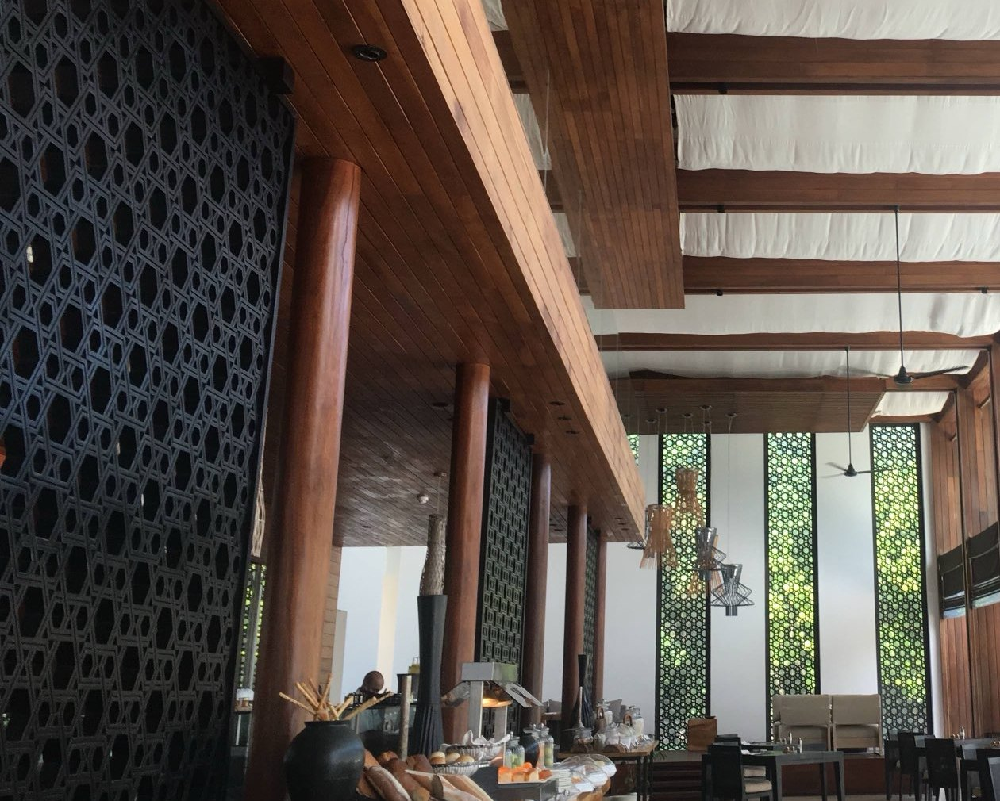

“Nut Free” Doesn’t Mean What You Think (Here’s The Difference)

It was the middle of the afternoon. I had the phone to my ear and a bakery on the line. Behind the voice, a lot of people were talking.
I asked my usual question. Do you use or store peanuts or tree nuts?
"No peanuts. But we do use walnuts and pistachios."
Oh. Okay.
I went on defense. Just a little.
Because "no peanuts" sounds so good. Until you hear the rest.
Remember Elf? Buddy sees a sign that says "World's Best Cup of Coffee" and gets so excited he walks in to congratulate them. A sign is just words on a wall. Same with "nut free" on a menu. It sounds amazing. It is still just words until you ask what it means.
My son has a peanut and tree nut allergy, so the difference matters in my house.
And I know what you are thinking. Jan, it is just a word. I wish. Same word, very different kitchens.
The whole kitchen has no peanuts or tree nuts: This is the strictest kind. Nothing with nuts is used or stored there. This is what I put on the "Business confirmed nut free kitchens" tab of my list, and only after the business confirms it.
The kitchen uses nuts, but they explained how they handle allergy orders: Maybe they bake allergy orders separately. Maybe they check ingredient sources, or store nuts apart. This is the "Accommodates nut allergies" tab. It is not nut free, and I say so on every card.
One item is nut free, the kitchen is not: The recipe may have no nuts, but the same oven or counter may touch them. Ask about the kitchen, not just the item.
Peanut free is not tree nut free. That call is why I always name both now. "Do you use or store peanuts or tree nuts?"
"May contain": A label can say it, or say nothing at all. Neither one tells you the whole story about the kitchen. When it matters, ask the business.
Here is the funny part. When I see "nut free" on a menu now, I get excited. Really. A little like Buddy.
Then I check.
Excited first. Then check. Every time.
Want to skip some of the calling? My list shows which kind each place is, a nut free kitchen or one that accommodates. Start there, then do your own checking.